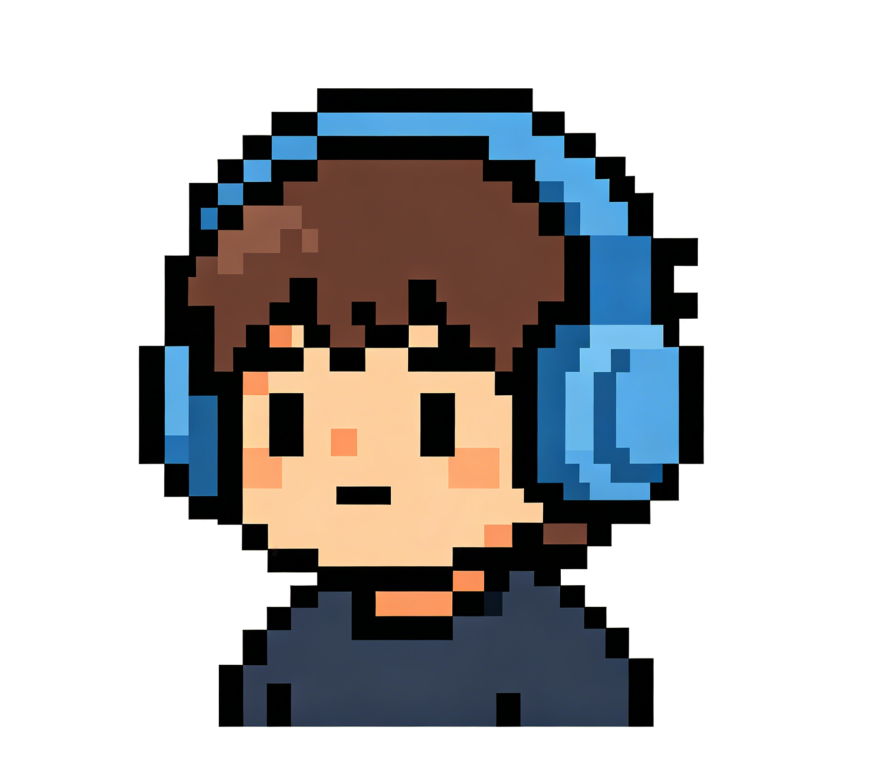

暂无歌曲
0:00
0:00

AI 对话
按住麦克风按钮说话
📋 历史
❤️ 喜欢
在蓝雾中漂流
设置
主题
🎵 品味设置
💡 想快速修改品味？和 NOSH 聊天更方便。这里提供手动编辑。
0播放
0收藏
0跳过
喜欢的歌手
喜欢的风格
不喜欢的风格
偏好的年代
🎧 播放分析 根据收听记录
NOSH
AI 音乐电台
基本信息
使用时长
-
品味完成度
未完成
收听统计
0
播放
0
收藏
0
跳过
喜欢的歌手
喜欢的风格
播放分析 根据收听记录
偏好的年代
💬 想修改品味？和 NOSH 聊天吧
设置
兼容 OpenAI API 格式的接口地址，如 https://api.moonshot.cn/v1
你的 API 密钥，安全保存在本地
如 moonshot-v1-8k、gpt-4o-mini、deepseek-chat 等
插件
检测中...